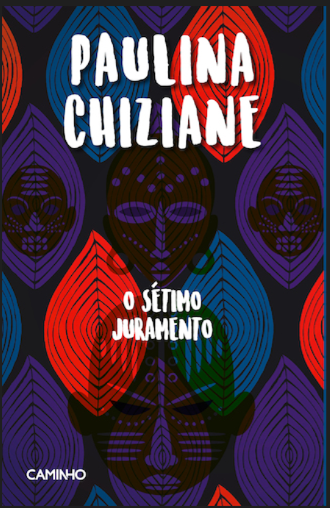

O SÉTIMO JURAMENTO
Descrição do livro
O último romance da moçambicana Paulina Chiziane, O sétimo juramento, retoma algumas preocupações que têm marcado a obra desta romancista moçambicana: a encenação quotidiana do feminino. Com este edifício sociocultural como pano de fundo, o romance focaliza o ritual de iniciação de uma personagem masculina, David, que, para ascender ao poder político, consolidado o poder econômico, recorre à feitiçaria, ao poder de um nynaga, que lhe exige, em troca, o que tem de mais precioso: a família. É aqui que as mulheres têm um papel fundamental: de simples objeto de prazer e de troca, elas se unem e se tornam sujeitos do processo, revertendo-o apesar de duas não terem logrado sobreviver. Portanto desta vez, para além da deslocação da cena para o mundo urbano do poder político e socioeconómico, o romance, embora revelando os meandros que determinam a vida da mulher mesmo numa sociedade urbana, diz também do conhecimento feminino sobre estratégias para contornar o peso da condição subalterna. * Este texto resulta da apresentação do romance O sétimo juramento, em 11 de Julho de 2000, na Galeria da Sociedade Portuguesa de Autores, em Lisboa. ** Universidade de Lisboa. 1 Apresentação da autora, em Lisboa, a propósito do lançamento da edição portuguesa de Ventos do apocalipse (Lisboa, Editorial Caminho, 1999), no dia 9 de Novembro de 1999. Também à jornalista Kathleen Gomes a autora se referiu ao livro como “uma história de feitiçaria.” (in Paulina Chiziane, “Nunca houve arma mais fulminante do que a Mulher”. “Suplemento Leituras”, Público, 13 de Novembro de 1999). Quando, em Novembro de 1999,1 Paulina Chiziane se referiu ao romance que seria o seu livro seguinte este, O sétimo juramento dele disse que seria algo diferente dos outros dois anteriores, Balada de amor ao vento (1990) e Ventos do apocalipse (1993). ...
Baixar Livro